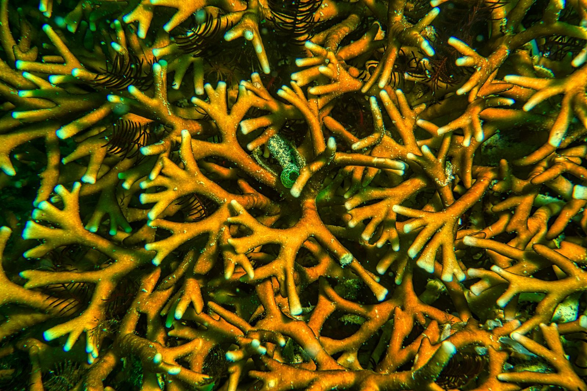

Case 01 · Resort house reef · 2024–
Casa Brisa: a house reef guests can snorkel again
A Belize resort whose house reef had flattened into rubble — and whose sustainability report needed the reef back, not a photograph of one.
The brief
Casa Brisa's house reef — the one in every brochure since 2009 — had been flattened by years of anchor damage and finished by the 2020 bleaching: guests snorkelled over rubble and dead elkhorn skeletons. The resort asked for a restored reef in front of the hotel, a snorkel trail by the 2025 season, and numbers honest enough to print in a sustainability report its auditors would read.
Decisions
We built a two-table satellite nursery in the lee of the dock rather than shipping Florida stock — Belize genotypes, Belize permits, no live coral across borders. Elkhorn led the planting: slow, heavy, surge-proof, the breakwater species a shallow house reef needs. The resort funded twelve mooring buoys so the anchor damage stopped at the source, and six of its dive staff trained with us to maintain the site between our visits.
Outcome
300 elkhorn colonies outplanted in the 2024–25 window; 204 alive at the twelve-month survey — 68%, a fair elkhorn figure, printed in the resort's report as-is. The companion staghorn cohort reads 79% at six months. The snorkel trail opened in November 2025 along the buoy line, and the resort renewed for a three-year term with its own trained staff doing the monthly checks.

"Sofia is the only contractor who has ever reported a loss to us before we found it ourselves. The elkhorn number was lower than the brochure version of this work — and the reef in front of the hotel is visibly alive again."
Daniela Ruiz · Sustainability Manager, Casa Brisa Resort